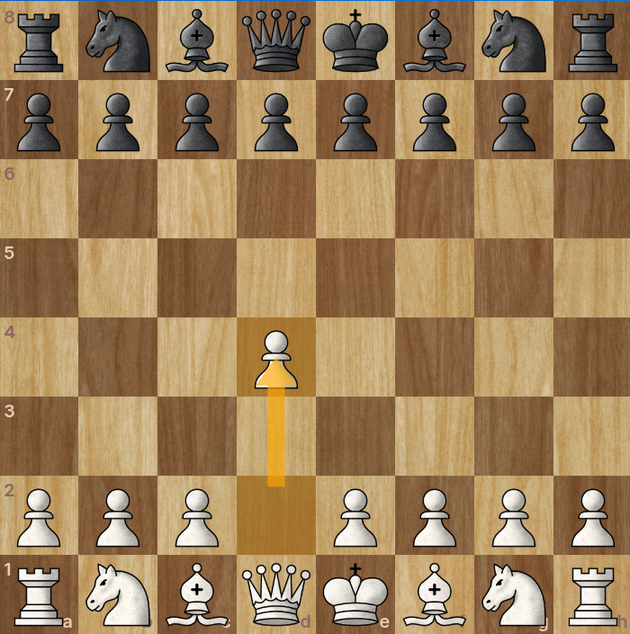
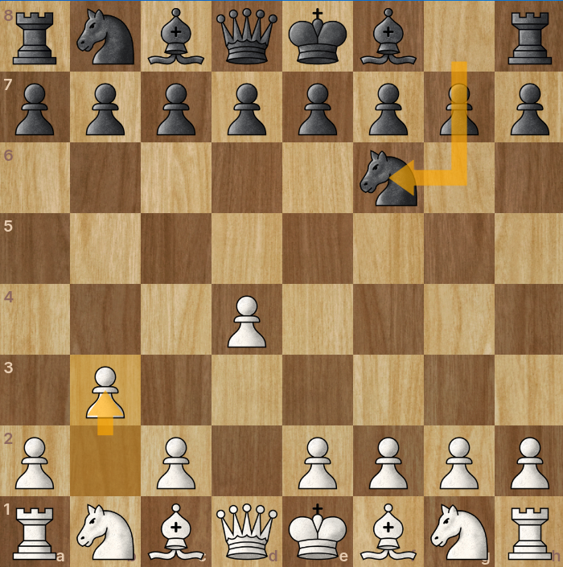
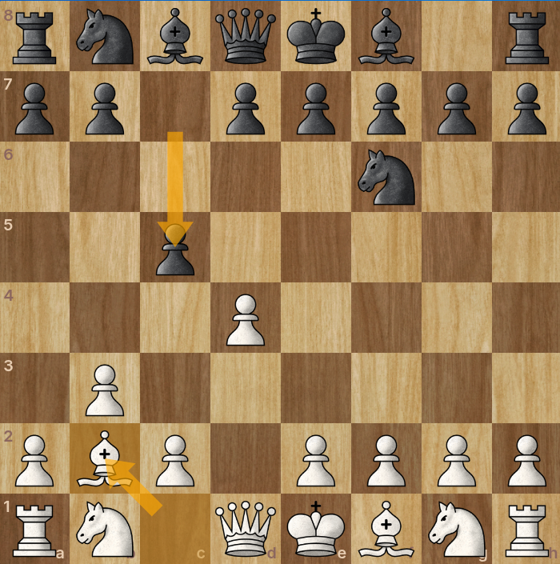
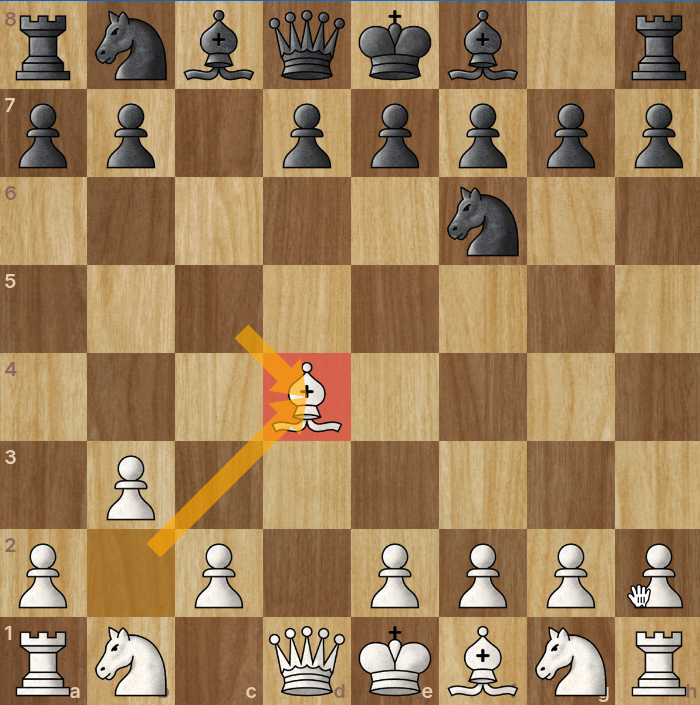
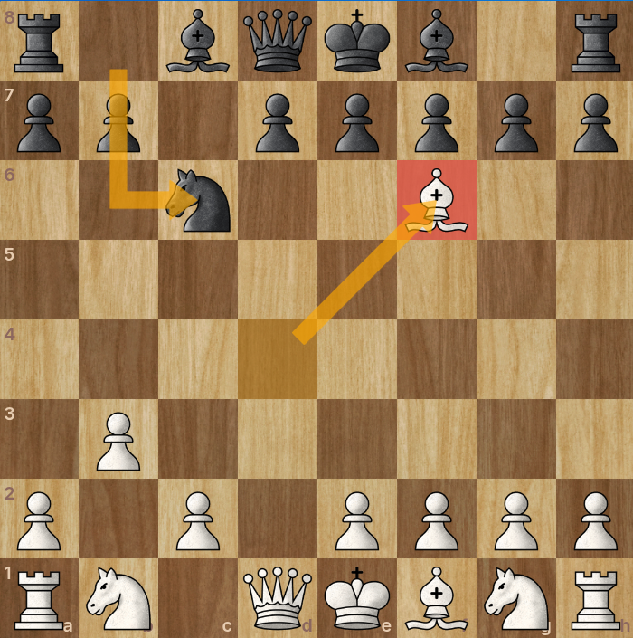
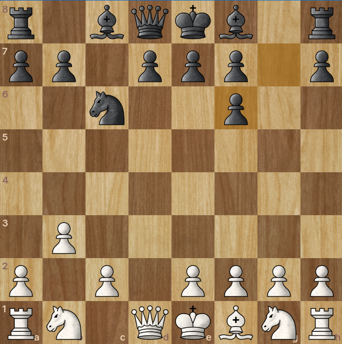
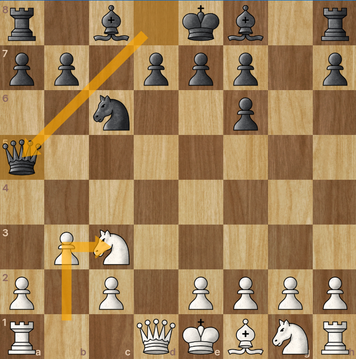
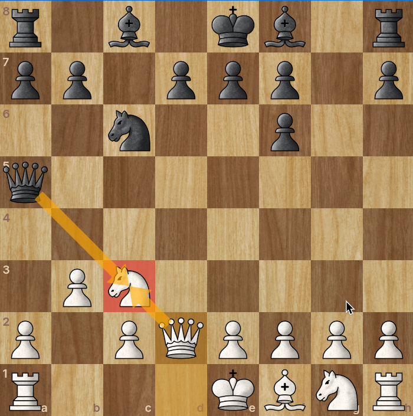
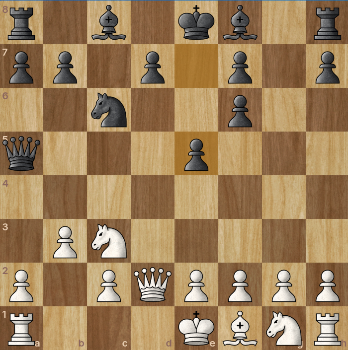
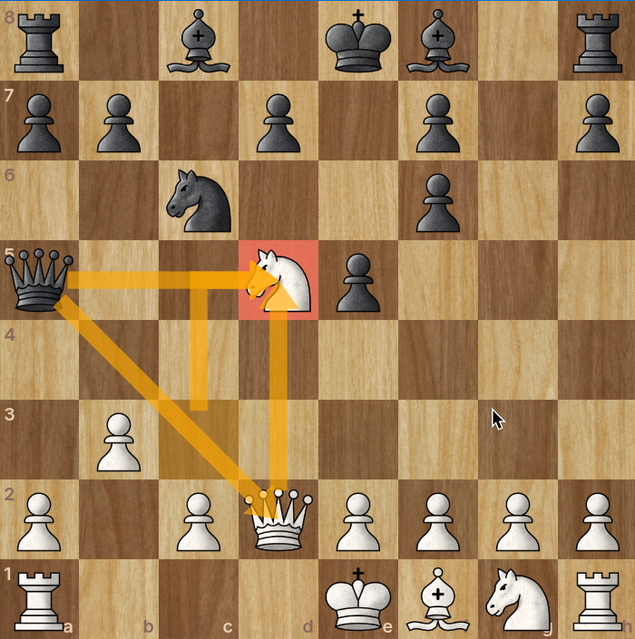

The Maruf Opening: A Sharp, Off-Beat Chess System Built for Online Blitz
An engine-tested, trap-heavy white opening system by Maruf
1. d4 Nf6 2. b3 c5 3. Bb2 cxd4 4. Bxd4 Nc6 5. Bxf6 gxf6 6. Nc3 Qa5 7. Qd2 e5 8. Nd5
The idea
Between training AI models and writing code, I spend a lot of time playing online blitz. Instead of memorizing 20 moves of standard grandmaster theory, I wanted an aggressive, trap-heavy system that forces opponents out of their comfort zone right from move two.
The Maruf Opening is built on three core principles:
- Bait the center. Let Black take the
d4pawn and open the long diagonal for White's bishop. - Break the structure. Play the signature tactical strike on move 5 (
5. Bxf6), sacrificing the dark-squared sniper bishop to permanently shatter Black's kingside pawns. - Strike early. Launch a lethal knight fork threat (
Nd5 → Nc7+) in the early middlegame.
Tested against Stockfish and proven in live games.
Step-by-step walkthrough

Claiming central space and opening lines for development.

Preparing the fianchetto sniper while Black challenges the center.

Setting the trap: White intentionally leaves the d4 pawn as bait to open the long diagonal.

Black takes the bait (3... cxd4), and White's bishop dominates the center.

The signature tactical strike: giving up the active bishop for Black's knight to wreck their pawn structure.

Mission accomplished: Black's kingside pawns are permanently doubled and weakened.

Controlling d5 and e4 while Black tries to pin the knight.

Unpins and defends the c3 knight, clearing the path for its knockout jump to d5 (and after a queen trade, our king actively centralizes on d2).

Black pushes in the center, unaware of the incoming tactical strike.

The knockout blow: threatening a deadly Nc7+ royal fork and forcing Black into passive defense.
Architecture: why we play it this way
Most classical openings rely on memorizing 15–20 moves of theory. In online blitz your opponent leaves theory by move 3–4 and all that prep goes in the trash. The Maruf Opening is designed as a deterministic algorithm that works against any opponent. Three architectural decisions hold it together:
Why 1. d4 + 2. b3 + 3. Bb2 (camouflage and fianchetto)
Start with 1. b3 and your opponent instantly takes the center with e5 and d5, cutting off your bishop's air. 1. d4 forces Black to fight for the center the classical way (1... Nf6 or 1... d5). Only when Black has committed do we bring the bishop to b2. From then on it is a hidden sniper firing along the whole a1–h8 diagonal, straight at Black's kingside.
Why we give up the d4 pawn on move 3 (psychological trap)
When we don't defend d4 on move 3 (3. Bb2), greed kicks in: Black sees a "free" central pawn and plays 3... cxd4. That is Black's main mistake. By capturing, Black removes the obstacle in front of our bishop and lets it land on the ideal central square on move 4 (4. Bxd4) without losing a single tempo.
Why 5. Bxf6 is our signature tactical strike: a sacrifice for a broken structure
5. Bxf6 is the signature tactical strike of the system: we give up our best bishop to wreck Black's pawn structure. The knight on f6 is the main defender of Black's kingside and a key controller of e4 and d5. By striking on f6 we force Black to recapture with a pawn (5... gxf6). The result:
- Black gets doubled pawns on the f-file. They can't protect each other and become a permanent target.
- Black's kingside is open, so short castling (
0-0) becomes deadly for their king. - Black loses control of the central squares, and our knights jump in at once.
Critical mistakes and the evolution of the system
While developing and testing the opening we found two critical weaknesses that broke early versions of the system, and fully fixed them.
Mistake #1: knight to the rim (6. Na3 instead of 6. Nc3)
Why not: once our light-squared bishop is traded on f6, the a3 square is left undefended. After 6. Na3 Black hits with 6... Qa5+ (check plus an attack on the knight) or simply takes it with ...Bxa3, leaving White a piece down.
The fix: the knight must go to the center, 6. Nc3. There it is protected by the b2 pawn, firmly controls d5 and e4, and neutralizes Black's early queen sorties.
Mistake #2: ignoring the pin on the c3 knight
Why not: after 6... Qa5 the c3 knight is pinned against our king on e1. If White plays on without dealing with the pin, the knight cannot move at all, so the deadly jump 8. Nd5! is impossible and the whole attack falls apart.
The fix: 7. Qd2. This move is needed to unpin the c3 knight right before 8. Nd5!, not for the sake of castling. The queen also defends the knight, so it is free to jump to d5 with a double threat: the queen on a5 and the Nc7+ fork. If Black trades queens (7... Qxd2+), our king simply recaptures and steps into the center, where it is perfectly safe.
Stockfish stress test: what if the opponent deviates?
We ran the Maruf Opening through the Stockfish engine to make sure the system doesn't fall apart against unusual or the toughest replies. Results for each branch:
Scenario 1: symmetrical reply (1. d4 d5)
Black won't let us trade pawns and builds a rock-solid center. The opening doesn't break: we still play 2. b3 and 3. Bb2. The bishop still lands on the long diagonal, and we undermine d5 with c4 or e3. As soon as Black develops the knight to f6 (in 95% of games it has to, to defend d5), we play our signature Bxf6 and steer the game into familiar territory.
Engine eval: +0.1 to +0.7 for White
Scenario 2: aggressive central break (...e5)
Black tries to seize the initiative and pushes to e5 hoping to grab the center. Our b2 bishop works like a trap: as soon as the e5 pawn opens the diagonal, White simply collects free material in the center (dxe5 or Bxe5). In several test lines Black even lost a knight on e5 with no compensation, because their queen was blocked by their own d5 pawn.
Engine eval: +4.2 to +5.18 (technically winning for White from the opening)
Scenario 3: defending against the 8. Nd5! fork (main line)
On move 8 our knight jumps to d5, attacking the queen on a5 and threatening a deadly Nc7+ fork (king + rook). Black has no good way out. If they trade queens (8... Qxd2+ 9. Kxd2), the Nc7+ threat remains, and Black must move the king to d8 (losing the right to castle for good) or give up the a8 rook.
Engine eval: full equality against perfect computer defense (0.0), and a huge edge against human opponents
Scaling: the mirror system for Black (Maruf Defense)
Testing showed that the sniper-bishop logic works just as well with the black pieces:
Maruf Defense
Move order: 1... e6 → 2... b6 → 3... Bb7.
Why: at low and mid ratings, every second opponent tries a "scholar's mate" with an early queen (Qh5 / Qf3) and bishop (Bc4). The bishop on b7 neutralizes that threat at once, hitting e4 and g2, and at the first chance it trades itself for a white knight (...Bxf3), wrecking White's structure.